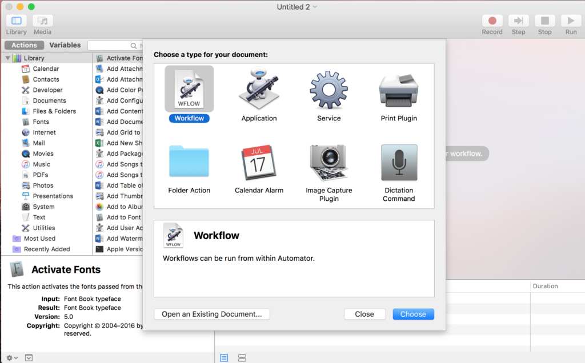
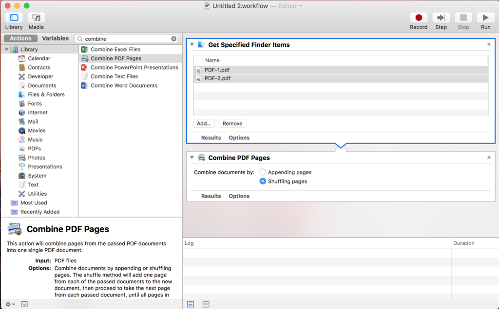
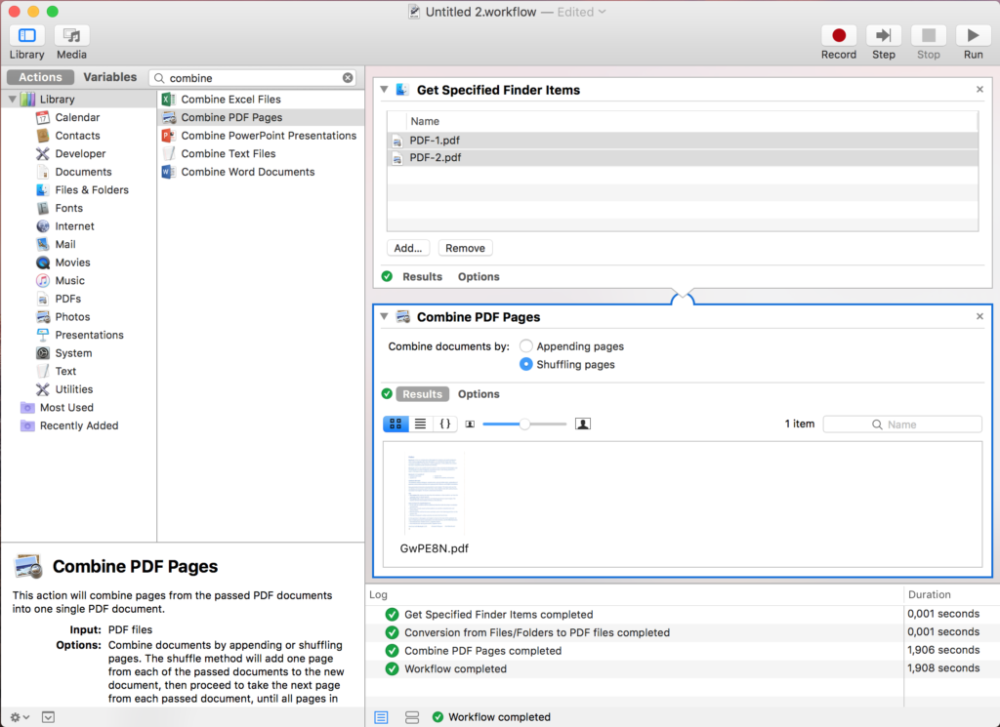

pokhari.com


Sometimes it is necessary to combine two PDF files one with only even pages and one with only odd pages. Mac Automator can do this task very easily. Just make your PDF files ready and follow the following steps:
Open Automator
Automator is shipped with any Mac. It has many awesome feature that can save your precious time at many occasions. For this task, first open Automator either from application launchpad or from spotlight light search or from application folder.

Create new workflow There are various options when you first open automator, choose workflow. It will let you to a blank window with lots of tasks on right hand side of the frame. Find a task to “Combine PDF pages”. You can also use search option on the top of the task list. Drag the task on the blank space on right hand side. To stack multiple PDF just choose “Appending Pages”. In this case we are shuffling two files together, so choose “Shuffling Pages”. 
Drag your PDF files on Automator Now its time to choose the pdf files you are shuffling together. Drag both the files on top of the previously dragged task. So that when you run the complete workflow, the automator will read those files and then perform the PDF shuffling task. 
Run the Automator and Get the result On the top right corner of Automator, you will find a play button. This will run the whole workflow process, i.e. get the PDF files and combine them together. You will find the output PDF in the “result tab” at the bottom of “Combine PDF pages” task. 
Save you output file somewhere and enjoy!